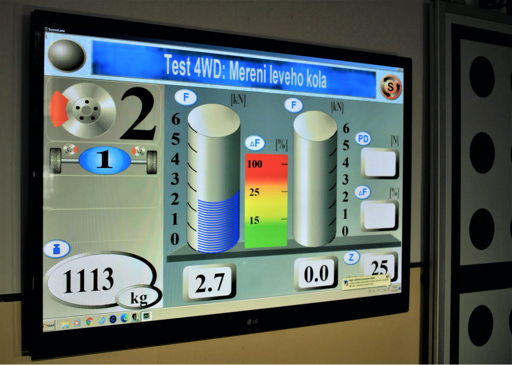

Test tlumičů, brzdového systému ( včetně elektrické parkovací brzdy ), detekce vůlí obou náprav.

Pro objednání v Praze a okolí volejte +420 605 399 448, +420 608 313 437
(Po-Pá od 9 do 18 hod.)

Značková péče o váš vůz v Praze
Test tlumičů, brzdového systému ( včetně elektrické parkovací brzdy ), detekce vůlí obou náprav.

Pro objednání v Praze a okolí volejte +420 605 399 448, +420 608 313 437
(Po-Pá od 9 do 18 hod.)